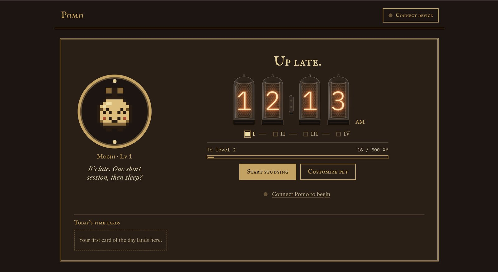
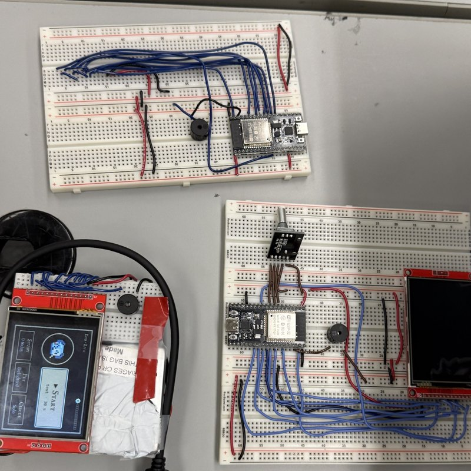
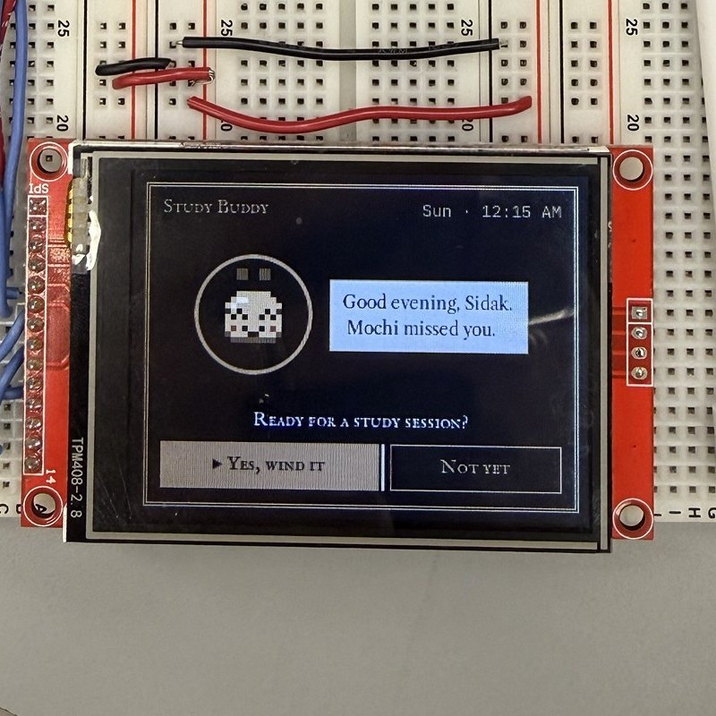

Pomo: a study pet that grows when you focus
Oct 2026, SBU Hacks, team of four. Frontend and UI/UX lead
An ESP32 desk pet that hides the clock, notices when you drift to YouTube or TikTok, and only levels up when you actually study. Friends with their own Pomo earn a shared bonus, but only while everyone stays focused.
I designed and built the laptop dashboard: hand-drawn SVG nixie tubes, a punched time card for every session, a talking home screen, and live two-way sync with the device over USB and Bluetooth. The device owns the timer and XP, so the screen can never disagree with the pet on your desk.
Over Bluetooth on Windows, the dashboard said the device was on USB. Windows presents a paired Bluetooth device as a plain COM port with no IDs. Now a port only counts as USB if it reports a USB vendor ID.